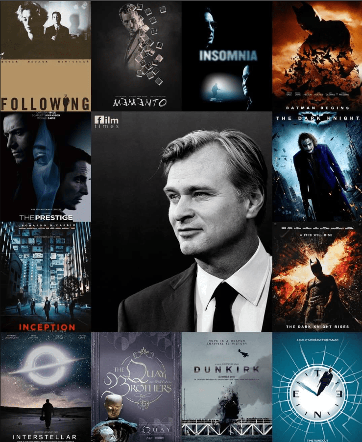
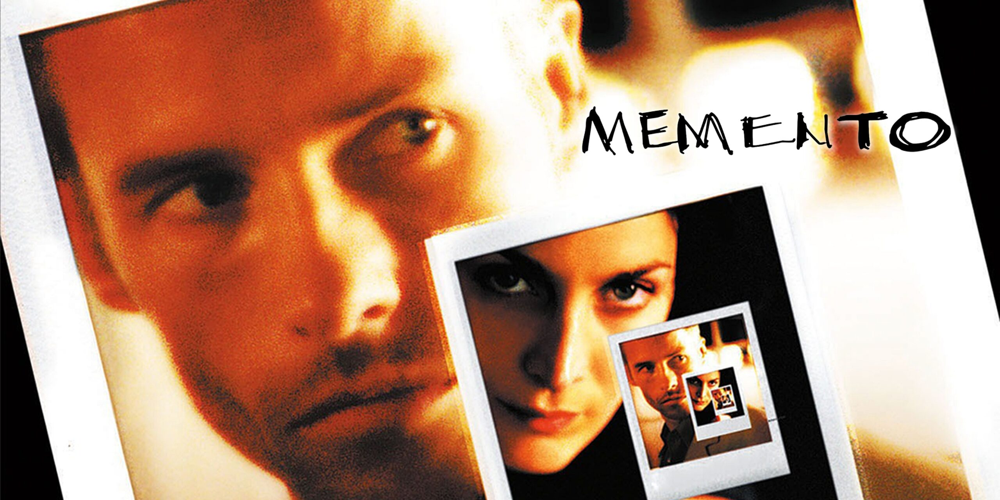

Introduction
Christopher Nolan, one of the most influential directors of our time, has redefined storytelling in cinema. Known for his masterful narratives and intricate plots, he creates films that challenge the mind and inspire the soul.

Admirable Qualities
Nolan's dedication to his craft is unmatched. From his preference for practical effects over CGI to his ability to weave complex themes into gripping stories, he demonstrates a passion for excellence. His films, such as "Inception," "The Dark Knight Trilogy," and "Interstellar," showcase his talent for merging visual brilliance with thought-provoking concepts.


Iconic Films
Each of Nolan's films is a testament to his genius. "Memento" introduced audiences to non-linear storytelling, while "Dunkirk" displayed his skill in creating immersive historical dramas. His ability to captivate audiences with both spectacle and substance makes him a true visionary.
 Legacy
Christopher Nolan's influence extends beyond filmmaking. He has inspired countless creators and brought art and intellect to mainstream cinema. His commitment to originality in an era of remakes and sequels is a beacon of hope for storytellers worldwide.